Gallery¶
Rendered examples covering a range of layout patterns. Click any heading in the right-hand table of contents to jump to an example.
Main Examples¶
Simple Pipeline¶
Minimal two-line pipeline with no sections.
CLI command:
Mermaid source
%%metro title: Simple Pipeline
%%metro style: dark
%%metro line: main | Main | #4CAF50
%%metro line: qc | Quality Control | #2196F3
graph LR
input[Input]
fastqc[FastQC]
trim[Trimming]
align[Alignment]
quant[Quantification]
multiqc[MultiQC]
input -->|main| trim
trim -->|main| align
align -->|main| quant
input -->|qc| fastqc
trim -->|qc| fastqc
quant -->|qc| multiqc
fastqc -->|qc| multiqc
Rendered output:
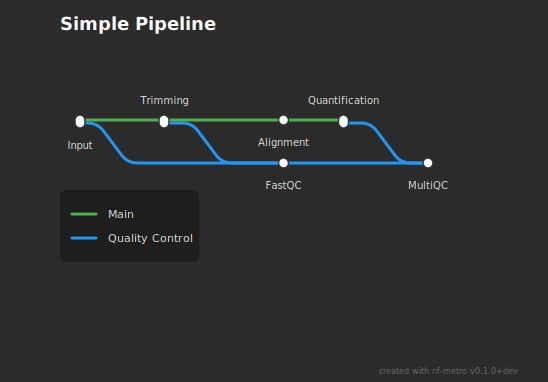
Rnaseq Auto¶
nf-core/rnaseq with fully auto-inferred layout.
CLI command:
Mermaid source
%%metro title: nf-core/rnaseq
%%metro logo: examples/nf-core-rnaseq_logo_dark.png
%%metro style: dark
%%metro line: star_rsem | Aligner: STAR, Quantification: RSEM | #0570b0
%%metro line: star_salmon | Aligner: STAR, Quantification: Salmon (default) | #2db572
%%metro line: hisat2 | Aligner: HISAT2, Quantification: None | #f5c542
%%metro line: pseudo_salmon | Pseudo-aligner: Salmon, Quantification: Salmon | #e63946
%%metro line: pseudo_kallisto | Pseudo-aligner: Kallisto, Quantification: Kallisto | #7b2d3b
%%metro legend: bl
graph LR
subgraph preprocessing [Pre-processing]
cat_fastq[cat fastq]
fastqc_raw[FastQC]
infer_strandedness[infer strandedness]
umi_tools_extract[UMI-tools extract]
fastp[FastP]
trimgalore[Trim Galore!]
fastqc_trimmed[FastQC]
bbsplit[BBSplit]
sortmerna[SortMeRNA]
cat_fastq -->|star_salmon,star_rsem,hisat2,pseudo_salmon,pseudo_kallisto| fastqc_raw
fastqc_raw -->|star_salmon,star_rsem,hisat2,pseudo_salmon,pseudo_kallisto| infer_strandedness
infer_strandedness -->|star_salmon,star_rsem,hisat2,pseudo_salmon,pseudo_kallisto| umi_tools_extract
umi_tools_extract -->|star_salmon,star_rsem,hisat2,pseudo_salmon,pseudo_kallisto| fastp
umi_tools_extract -->|star_salmon,star_rsem,hisat2,pseudo_salmon,pseudo_kallisto| trimgalore
fastp -->|star_salmon,star_rsem,hisat2,pseudo_salmon,pseudo_kallisto| fastqc_trimmed
trimgalore -->|star_salmon,star_rsem,hisat2,pseudo_salmon,pseudo_kallisto| fastqc_trimmed
fastqc_trimmed -->|star_salmon,star_rsem,hisat2,pseudo_salmon,pseudo_kallisto| bbsplit
bbsplit -->|star_salmon,star_rsem,hisat2,pseudo_salmon,pseudo_kallisto| sortmerna
end
subgraph genome_align [Genome alignment & quantification]
star[STAR]
hisat2_align[HISAT2]
rsem[RSEM]
salmon_quant[Salmon]
umi_tools_dedup[UMI-tools dedup]
star -->|star_rsem| rsem
star -->|star_salmon| umi_tools_dedup
umi_tools_dedup -->|star_salmon| salmon_quant
hisat2_align -->|hisat2| umi_tools_dedup
end
subgraph postprocessing [Post-processing]
samtools[SAMtools]
picard[Picard]
bedtools[BEDTools]
bedgraph[bedGraphToBigWig]
stringtie[StringTie]
samtools -->|star_salmon,star_rsem,hisat2| picard
picard -->|star_salmon,star_rsem,hisat2| bedtools
bedtools -->|star_salmon,star_rsem,hisat2| bedgraph
bedgraph -->|star_salmon,star_rsem,hisat2| stringtie
end
subgraph pseudo_align [Pseudo-alignment & quantification]
salmon_pseudo[Salmon]
kallisto[Kallisto]
multiqc_pseudo[MultiQC]
salmon_pseudo -->|pseudo_salmon| multiqc_pseudo
kallisto -->|pseudo_kallisto| multiqc_pseudo
end
subgraph qc_report [Quality control & reporting]
rseqc[RSeQC]
preseq[Preseq]
qualimap[Qualimap]
dupradar[dupRadar]
deseq2_pca[DESeq2 PCA]
kraken2[Kraken2/Bracken]
multiqc_final[MultiQC]
rseqc -->|star_salmon,star_rsem,hisat2| preseq
preseq -->|star_salmon,star_rsem,hisat2| qualimap
qualimap -->|star_salmon,star_rsem,hisat2| dupradar
dupradar -->|star_salmon,star_rsem,hisat2| deseq2_pca
deseq2_pca -->|star_salmon,star_rsem,hisat2| kraken2
kraken2 -->|star_salmon,star_rsem,hisat2| multiqc_final
end
%% Inter-section edges
sortmerna -->|star_salmon,star_rsem| star
sortmerna -->|hisat2| hisat2_align
sortmerna -->|pseudo_salmon| salmon_pseudo
sortmerna -->|pseudo_kallisto| kallisto
salmon_quant -->|star_salmon| samtools
rsem -->|star_rsem| samtools
umi_tools_dedup -->|hisat2| samtools
stringtie -->|star_salmon,star_rsem,hisat2| rseqc
Rendered output:

Rnaseq Sections¶
nf-core/rnaseq with manual grid overrides and file markers.
CLI command:
Mermaid source
%%metro title: nf-core/rnaseq
%%metro logo: examples/nf-core-rnaseq_logo_dark.png
%%metro style: dark
%%metro file: fastq_in | FASTQ
%%metro file: report_final | HTML
%%metro file: report_quant | HTML
%%metro file: report_bowtie2 | HTML
%%metro line: star_rsem | Aligner: STAR, Quantification: RSEM | #0570b0
%%metro line: star_salmon | Aligner: STAR, Quantification: Salmon (default) | #2db572
%%metro line: hisat2 | Aligner: HISAT2, Quantification: None | #f5c542
%%metro line: bowtie2_salmon | Aligner: Bowtie2, Quantification: Salmon | #ff8c00
%%metro line: pseudo_salmon | Pseudo-aligner: Salmon, Quantification: Salmon | #e63946
%%metro line: pseudo_kallisto | Pseudo-aligner: Kallisto, Quantification: Kallisto | #7b2d3b
%%metro legend: bl
graph LR
subgraph preprocessing [Pre-processing]
%%metro exit: right | star_salmon, star_rsem, hisat2, bowtie2_salmon
%%metro exit: bottom | pseudo_salmon, pseudo_kallisto
fastq_in[ ]
cat_fastq[cat fastq]
fastqc_raw[FastQC]
infer_strandedness[infer strandedness]
umi_tools_extract[UMI-tools extract]
fastp[FastP]
trimgalore[Trim Galore!]
fastqc_trimmed[FastQC]
bbsplit[BBSplit]
sortmerna[SortMeRNA]
ribodetector[RiboDetector]
fastqc_filtered[FastQC]
fastq_in -->|pseudo_salmon,pseudo_kallisto,star_salmon,star_rsem,hisat2,bowtie2_salmon| cat_fastq
cat_fastq -->|pseudo_salmon,pseudo_kallisto,star_salmon,star_rsem,hisat2,bowtie2_salmon| fastqc_raw
fastqc_raw -->|pseudo_salmon,pseudo_kallisto,star_salmon,star_rsem,hisat2,bowtie2_salmon| infer_strandedness
infer_strandedness -->|pseudo_salmon,pseudo_kallisto,star_salmon,star_rsem,hisat2,bowtie2_salmon| umi_tools_extract
umi_tools_extract -->|pseudo_salmon,pseudo_kallisto,star_salmon,star_rsem,hisat2,bowtie2_salmon| fastp
umi_tools_extract -->|pseudo_salmon,pseudo_kallisto,star_salmon,star_rsem,hisat2,bowtie2_salmon| trimgalore
fastp -->|pseudo_salmon,pseudo_kallisto,star_salmon,star_rsem,hisat2,bowtie2_salmon| fastqc_trimmed
trimgalore -->|pseudo_salmon,pseudo_kallisto,star_salmon,star_rsem,hisat2,bowtie2_salmon| fastqc_trimmed
fastqc_trimmed -->|pseudo_salmon,pseudo_kallisto,star_salmon,star_rsem,hisat2,bowtie2_salmon| bbsplit
fastqc_trimmed -->|pseudo_salmon,pseudo_kallisto,star_salmon,star_rsem,hisat2,bowtie2_salmon| sortmerna
fastqc_trimmed -->|pseudo_salmon,pseudo_kallisto,star_salmon,star_rsem,hisat2,bowtie2_salmon| ribodetector
bbsplit -->|pseudo_salmon,pseudo_kallisto,star_salmon,star_rsem,hisat2,bowtie2_salmon| fastqc_filtered
sortmerna -->|pseudo_salmon,pseudo_kallisto,star_salmon,star_rsem,hisat2,bowtie2_salmon| fastqc_filtered
ribodetector -->|pseudo_salmon,pseudo_kallisto,star_salmon,star_rsem,hisat2,bowtie2_salmon| fastqc_filtered
end
subgraph genome_align [Genome alignment & quantification]
%%metro entry: left | star_salmon, star_rsem, hisat2, bowtie2_salmon
%%metro exit: right | star_salmon, star_rsem
%%metro exit: right | hisat2
star[STAR]
hisat2_align[HISAT2]
bowtie2_align[Bowtie2]
rsem[RSEM]
salmon_quant[Salmon]
umi_tools_dedup[UMI-tools dedup]
tximport_ga[tximport]
summarized_exp_ga[Sum. Exp.]
multiqc_bowtie2[MultiQC]
report_bowtie2[ ]
_h1[hidden]
_h2[hidden]
_h3[hidden]
star -->|star_rsem| rsem
star -->|star_salmon| umi_tools_dedup
hisat2_align -->|hisat2| umi_tools_dedup
bowtie2_align -->|bowtie2_salmon| umi_tools_dedup
umi_tools_dedup -->|star_salmon| salmon_quant
umi_tools_dedup -->|hisat2| _h1
_h1 -->|hisat2| _h2
_h2 -->|hisat2| _h3
salmon_quant -->|star_salmon| tximport_ga
rsem -->|star_rsem| tximport_ga
tximport_ga -->|star_salmon,star_rsem| summarized_exp_ga
umi_tools_dedup -->|bowtie2_salmon| salmon_quant
salmon_quant -->|bowtie2_salmon| multiqc_bowtie2
multiqc_bowtie2 -->|bowtie2_salmon| report_bowtie2
end
subgraph pseudo_align [Pseudo-alignment & quantification]
%%metro entry: left | pseudo_salmon, pseudo_kallisto
salmon_pseudo[Salmon]
kallisto[Kallisto]
tximport_pa[tximport]
summarized_exp_pa[Sum. Exp.]
multiqc_quant[MultiQC]
report_quant[ ]
salmon_pseudo -->|pseudo_salmon| tximport_pa
kallisto -->|pseudo_kallisto| tximport_pa
tximport_pa -->|pseudo_salmon,pseudo_kallisto| summarized_exp_pa
summarized_exp_pa -->|pseudo_salmon,pseudo_kallisto| multiqc_quant
multiqc_quant -->|pseudo_salmon,pseudo_kallisto| report_quant
end
subgraph postprocessing [Post-processing]
%%metro direction: TB
%%metro entry: left | star_salmon, star_rsem, hisat2
%%metro exit: bottom | star_salmon, star_rsem, hisat2
samtools[SAMtools]
picard[Picard]
bedtools[BEDTools]
bedgraph[bedGraphToBigWig]
stringtie[StringTie]
samtools -->|star_salmon,star_rsem,hisat2| picard
picard -->|star_salmon,star_rsem,hisat2| bedtools
bedtools -->|star_salmon,star_rsem,hisat2| bedgraph
bedgraph -->|star_salmon,star_rsem,hisat2| stringtie
end
subgraph qc_report [Quality control & reporting]
%%metro direction: RL
%%metro entry: top | star_salmon, star_rsem, hisat2
rseqc[RSeQC]
preseq[Preseq]
qualimap[Qualimap]
dupradar[dupRadar]
featurecounts[featureCounts]
deseq2_pca[DESeq2 PCA]
kraken2[Kraken2/Bracken]
sylph[Sylph]
multiqc_final[MultiQC]
report_final[ ]
rseqc -->|star_salmon,star_rsem,hisat2| preseq
preseq -->|star_salmon,star_rsem,hisat2| qualimap
qualimap -->|star_salmon,star_rsem,hisat2| dupradar
dupradar -->|star_salmon,star_rsem,hisat2| featurecounts
featurecounts -->|star_salmon,star_rsem,hisat2| deseq2_pca
deseq2_pca -->|star_salmon,star_rsem,hisat2| kraken2
deseq2_pca -->|star_salmon,star_rsem,hisat2| sylph
kraken2 -->|star_salmon,star_rsem,hisat2| multiqc_final
sylph -->|star_salmon,star_rsem,hisat2| multiqc_final
multiqc_final -->|star_salmon,star_rsem,hisat2| report_final
end
%% Inter-section edges
fastqc_filtered -->|star_salmon,star_rsem| star
fastqc_filtered -->|hisat2| hisat2_align
fastqc_filtered -->|bowtie2_salmon| bowtie2_align
fastqc_filtered -->|pseudo_salmon| salmon_pseudo
fastqc_filtered -->|pseudo_kallisto| kallisto
summarized_exp_ga -->|star_salmon,star_rsem| samtools
_h3 -->|hisat2| samtools
stringtie -->|star_salmon,star_rsem,hisat2| rseqc
Rendered output:
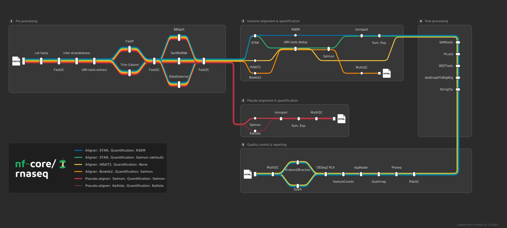
Simple Topologies¶
Single Section¶
One section, one line. The simplest possible case.
CLI command:
Mermaid source
Rendered output:

Deep Linear¶
Seven sections in a straight chain. Exercises the grid fold threshold.
CLI command:
Mermaid source
%%metro title: Deep Linear Chain
%%metro style: dark
%%metro line: main | Main | #e63946
%%metro line: alt | Alternative | #2db572
graph LR
subgraph sec1 [Input]
%%metro exit: right | main, alt
s1a[Read]
s1b[Validate]
s1a -->|main,alt| s1b
end
subgraph sec2 [QC]
%%metro entry: left | main, alt
%%metro exit: right | main, alt
s2a[FastQC]
s2b[MultiQC]
s2a -->|main,alt| s2b
end
subgraph sec3 [Trim]
%%metro entry: left | main, alt
%%metro exit: right | main, alt
s3a[Trim]
s3b[Filter]
s3c[Check]
s3a -->|main| s3b
s3a -->|alt| s3b
s3b -->|main,alt| s3c
end
subgraph sec4 [Align]
%%metro entry: left | main, alt
%%metro exit: right | main, alt
s4a[Index]
s4b[Map]
s4c[Sort]
s4a -->|main,alt| s4b
s4b -->|main,alt| s4c
end
subgraph sec5 [Quant]
%%metro entry: left | main, alt
%%metro exit: right | main, alt
s5a[Count]
s5b[Normalize]
s5a -->|main,alt| s5b
end
subgraph sec6 [Analysis]
%%metro entry: left | main, alt
%%metro exit: right | main, alt
s6a[Diff Expr]
s6b[Pathway]
s6c[Annotate]
s6a -->|main,alt| s6b
s6b -->|main,alt| s6c
end
subgraph sec7 [Report]
%%metro entry: left | main, alt
s7a[Aggregate]
s7b[Report]
s7a -->|main,alt| s7b
end
s1b -->|main,alt| s2a
s2b -->|main,alt| s3a
s3c -->|main,alt| s4a
s4c -->|main,alt| s5a
s5b -->|main,alt| s6a
s6c -->|main,alt| s7a
Rendered output:

Parallel Independent¶
Two disconnected pipelines stacked vertically.
CLI command:
Mermaid source
%%metro title: Parallel Independent
%%metro style: dark
%%metro line: dna | DNA Pipeline | #e63946
%%metro line: rna | RNA Pipeline | #0570b0
graph LR
subgraph dna_input [DNA Input]
%%metro exit: right | dna
di1[Read DNA]
di2[QC DNA]
di1 -->|dna| di2
end
subgraph dna_process [DNA Process]
%%metro entry: left | dna
dp1[Align DNA]
dp2[Call Variants]
dp1 -->|dna| dp2
end
subgraph rna_input [RNA Input]
%%metro exit: right | rna
ri1[Read RNA]
ri2[QC RNA]
ri1 -->|rna| ri2
end
subgraph rna_process [RNA Process]
%%metro entry: left | rna
rp1[Align RNA]
rp2[Quantify]
rp1 -->|rna| rp2
end
di2 -->|dna| dp1
ri2 -->|rna| rp1
Rendered output:
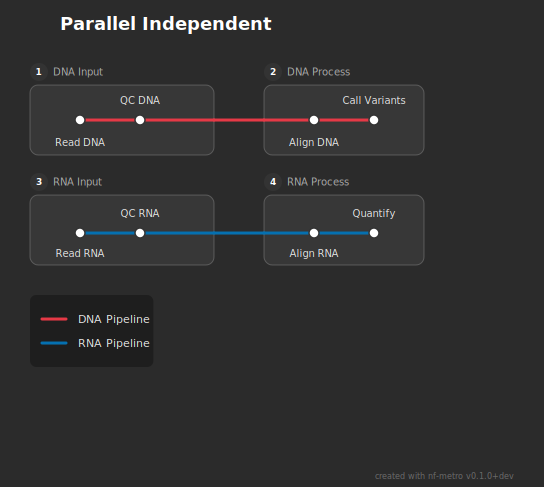
Fan-out and Fan-in¶
Wide Fan Out¶
One source fanning out to four target sections.
CLI command:
Mermaid source
%%metro title: Wide Fan-Out
%%metro style: dark
%%metro line: alpha | Alpha | #e63946
%%metro line: beta | Beta | #2db572
%%metro line: gamma | Gamma | #0570b0
%%metro line: delta | Delta | #f5c542
graph LR
subgraph source [Source]
%%metro exit: right | alpha, beta, gamma, delta
input[Input]
process[Process]
input -->|alpha,beta,gamma,delta| process
end
subgraph target_a [Target A]
%%metro entry: left | alpha
a1[Step A1]
a2[Step A2]
a1 -->|alpha| a2
end
subgraph target_b [Target B]
%%metro entry: left | beta
b1[Step B1]
b2[Step B2]
b1 -->|beta| b2
end
subgraph target_c [Target C]
%%metro entry: left | gamma
c1[Step C1]
c2[Step C2]
c1 -->|gamma| c2
end
subgraph target_d [Target D]
%%metro entry: left | delta
d1[Step D1]
d2[Step D2]
d1 -->|delta| d2
end
process -->|alpha| a1
process -->|beta| b1
process -->|gamma| c1
process -->|delta| d1
Rendered output:
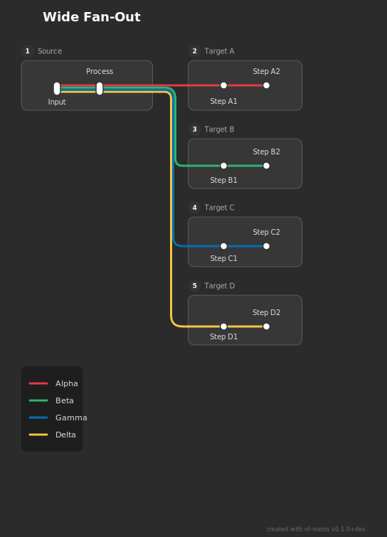
Wide Fan In¶
Four sources converging into one target section.
CLI command:
Mermaid source
%%metro title: Wide Fan-In
%%metro style: dark
%%metro line: alpha | Alpha | #e63946
%%metro line: beta | Beta | #2db572
%%metro line: gamma | Gamma | #0570b0
%%metro line: delta | Delta | #f5c542
graph LR
subgraph src_a [Source A]
%%metro exit: right | alpha
a1[Step A1]
a2[Step A2]
a1 -->|alpha| a2
end
subgraph src_b [Source B]
%%metro exit: right | beta
b1[Step B1]
b2[Step B2]
b1 -->|beta| b2
end
subgraph src_c [Source C]
%%metro exit: right | gamma
c1[Step C1]
c2[Step C2]
c1 -->|gamma| c2
end
subgraph src_d [Source D]
%%metro exit: right | delta
d1[Step D1]
d2[Step D2]
d1 -->|delta| d2
end
subgraph sink [Sink]
%%metro entry: left | alpha, beta, gamma, delta
merge[Merge]
output[Output]
merge -->|alpha,beta,gamma,delta| output
end
a2 -->|alpha| merge
b2 -->|beta| merge
c2 -->|gamma| merge
d2 -->|delta| merge
Rendered output:

Section Diamond¶
Section-level fork-join: fan-out then reconverge.
CLI command:
Mermaid source
%%metro title: Section Diamond
%%metro style: dark
%%metro line: left_path | Left Path | #e63946
%%metro line: right_path | Right Path | #0570b0
graph LR
subgraph start [Start]
%%metro exit: right | left_path, right_path
input[Input]
prep[Prepare]
input -->|left_path,right_path| prep
end
subgraph branch_left [Branch Left]
%%metro entry: left | left_path
%%metro exit: right | left_path
l1[Left Step 1]
l2[Left Step 2]
l3[Left Step 3]
l1 -->|left_path| l2
l2 -->|left_path| l3
end
subgraph branch_right [Branch Right]
%%metro entry: left | right_path
%%metro exit: right | right_path
r1[Right Step 1]
r2[Right Step 2]
r1 -->|right_path| r2
end
subgraph finish [Finish]
%%metro entry: left | left_path, right_path
merge[Merge]
report[Report]
merge -->|left_path,right_path| report
end
prep -->|left_path| l1
prep -->|right_path| r1
l3 -->|left_path| merge
r2 -->|right_path| merge
Rendered output:
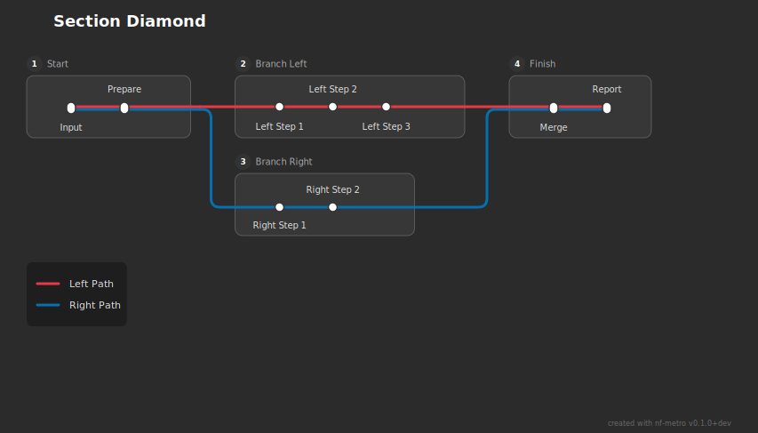
Branching and Multipath¶
Asymmetric Tree¶
One root branching into three paths of different depths.
CLI command:
Mermaid source
%%metro title: Asymmetric Tree
%%metro style: dark
%%metro line: short | Short Branch | #e63946
%%metro line: medium | Medium Branch | #2db572
%%metro line: long | Long Branch | #0570b0
graph LR
subgraph root [Root]
%%metro exit: right | short, medium, long
input[Input]
dispatch[Dispatch]
input -->|short,medium,long| dispatch
end
subgraph branch_short [Short]
%%metro entry: left | short
s1[Quick]
s2[Result]
s1 -->|short| s2
end
subgraph branch_med_1 [Medium Step 1]
%%metro entry: left | medium
%%metro exit: right | medium
m1[Medium A]
m2[Medium B]
m1 -->|medium| m2
end
subgraph branch_med_2 [Medium Step 2]
%%metro entry: left | medium
m3[Medium C]
m4[Medium D]
m3 -->|medium| m4
end
subgraph branch_long_1 [Long Step 1]
%%metro entry: left | long
%%metro exit: right | long
l1[Long A]
l2[Long B]
l1 -->|long| l2
end
subgraph branch_long_2 [Long Step 2]
%%metro entry: left | long
%%metro exit: right | long
l3[Long C]
l4[Long D]
l3 -->|long| l4
end
subgraph branch_long_3 [Long Step 3]
%%metro entry: left | long
l5[Long E]
l6[Long F]
l5 -->|long| l6
end
dispatch -->|short| s1
dispatch -->|medium| m1
dispatch -->|long| l1
m2 -->|medium| m3
l2 -->|long| l3
l4 -->|long| l5
Rendered output:
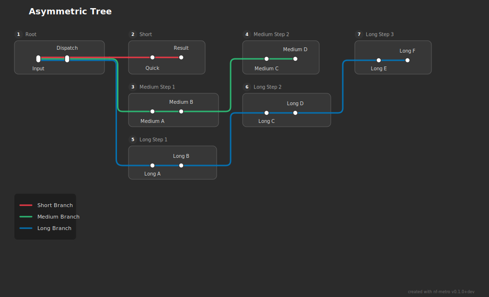
Complex Multipath¶
Four lines taking different routes through six sections.
CLI command:
Mermaid source
%%metro title: Complex Multipath
%%metro style: dark
%%metro line: fast | Fast Path | #e63946
%%metro line: standard | Standard Path | #2db572
%%metro line: detailed | Detailed Analysis | #0570b0
%%metro line: legacy | Legacy Path | #f5c542
graph LR
subgraph input_sec [Input]
%%metro exit: right | fast, standard, detailed, legacy
raw[Raw Data]
validate[Validate]
raw -->|fast,standard,detailed,legacy| validate
end
subgraph fast_track [Fast Track]
%%metro entry: left | fast
%%metro exit: right | fast
quick_align[Quick Align]
quick_quant[Quick Quant]
quick_align -->|fast| quick_quant
end
subgraph full_preprocess [Full Pre-process]
%%metro entry: left | standard, detailed, legacy
%%metro exit: right | standard, detailed, legacy
trim[Trim]
filter[Filter]
qc_check[QC Check]
trim -->|standard,detailed,legacy| filter
filter -->|standard,detailed,legacy| qc_check
end
subgraph standard_analysis [Standard Analysis]
%%metro entry: left | standard, legacy
%%metro exit: right | standard, legacy
align[Align]
quant[Quantify]
align -->|standard,legacy| quant
end
subgraph deep_analysis [Deep Analysis]
%%metro entry: left | detailed
%%metro exit: right | detailed
hq_align[HQ Align]
dedup[Dedup]
hq_quant[HQ Quantify]
hq_align -->|detailed| dedup
dedup -->|detailed| hq_quant
end
subgraph output_sec [Output]
%%metro entry: left | fast, standard, detailed, legacy
aggregate[Aggregate]
report[Report]
aggregate -->|fast,standard,detailed,legacy| report
end
validate -->|fast| quick_align
validate -->|standard,detailed,legacy| trim
qc_check -->|standard,legacy| align
qc_check -->|detailed| hq_align
quick_quant -->|fast| aggregate
quant -->|standard,legacy| aggregate
hq_quant -->|detailed| aggregate
Rendered output:
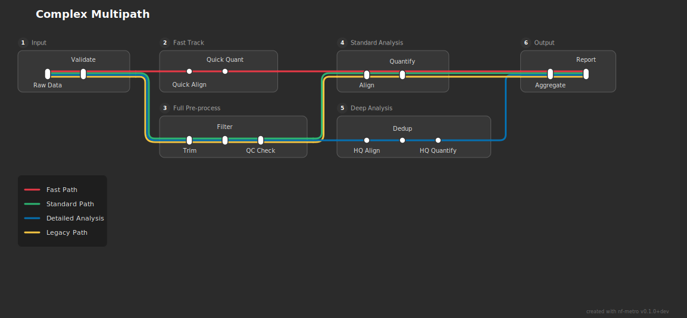
Multi-line Bundles¶
Multi Line Bundle¶
Six lines travelling through the same three-section chain.
CLI command:
Mermaid source
%%metro title: Multi-Line Bundle
%%metro style: dark
%%metro line: line1 | Line 1 | #e63946
%%metro line: line2 | Line 2 | #2db572
%%metro line: line3 | Line 3 | #0570b0
%%metro line: line4 | Line 4 | #f5c542
%%metro line: line5 | Line 5 | #ff8c00
%%metro line: line6 | Line 6 | #7b2d3b
graph LR
subgraph input_sec [Input]
%%metro exit: right | line1, line2, line3, line4, line5, line6
raw[Raw]
qc[QC]
raw -->|line1,line2,line3,line4,line5,line6| qc
end
subgraph process_sec [Processing]
%%metro entry: left | line1, line2, line3, line4, line5, line6
%%metro exit: right | line1, line2, line3, line4, line5, line6
align[Align]
sort[Sort]
dedup[Dedup]
align -->|line1,line2,line3,line4,line5,line6| sort
sort -->|line1,line2,line3,line4,line5,line6| dedup
end
subgraph output_sec [Output]
%%metro entry: left | line1, line2, line3, line4, line5, line6
quant[Quantify]
report[Report]
quant -->|line1,line2,line3,line4,line5,line6| report
end
qc -->|line1,line2,line3,line4,line5,line6| align
dedup -->|line1,line2,line3,line4,line5,line6| quant
Rendered output:
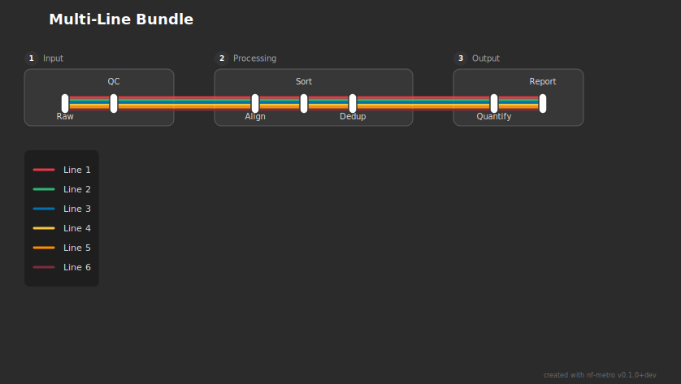
Mixed Port Sides¶
A section with both RIGHT and BOTTOM exits.
CLI command:
Mermaid source
%%metro title: Mixed Port Sides
%%metro style: dark
%%metro line: horizontal | Horizontal Flow | #e63946
%%metro line: vertical | Vertical Flow | #0570b0
graph LR
subgraph origin [Origin]
%%metro exit: right | horizontal
%%metro exit: bottom | vertical
start[Start]
fork[Fork]
start -->|horizontal,vertical| fork
end
subgraph right_sec [Right Section]
%%metro entry: left | horizontal
r1[Right A]
r2[Right B]
r1 -->|horizontal| r2
end
subgraph bottom_sec [Bottom Section]
%%metro entry: top | vertical
b1[Bottom A]
b2[Bottom B]
b1 -->|vertical| b2
end
fork -->|horizontal| r1
fork -->|vertical| b1
Rendered output:
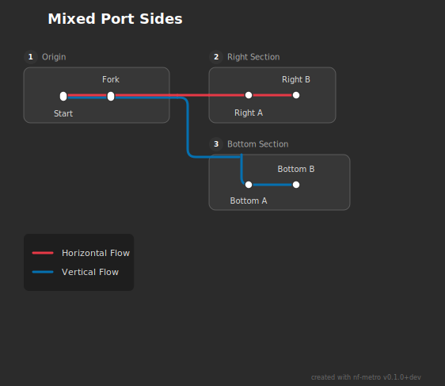
Realistic Pipelines¶
Rnaseq Lite¶
Simplified RNA-seq pipeline with three analysis routes.
CLI command:
Mermaid source
%%metro title: RNA-seq Lite
%%metro style: dark
%%metro line: star | STAR + Salmon | #2db572
%%metro line: hisat | HISAT2 | #f5c542
%%metro line: pseudo | Pseudo-alignment | #e63946
graph LR
subgraph preprocessing [Pre-processing]
%%metro exit: right | star, hisat, pseudo
input[Input]
fastqc_raw[FastQC]
fastp[FastP]
trimgalore[Trim Galore!]
fastqc_trim[FastQC]
filter[SortMeRNA]
fastqc_filt[FastQC]
input -->|star,hisat,pseudo| fastqc_raw
fastqc_raw -->|star,hisat,pseudo| fastp
fastqc_raw -->|star,hisat,pseudo| trimgalore
fastp -->|star,hisat,pseudo| fastqc_trim
trimgalore -->|star,hisat,pseudo| fastqc_trim
fastqc_trim -->|star,hisat,pseudo| filter
filter -->|star,hisat,pseudo| fastqc_filt
end
subgraph genome_align [Genome alignment]
%%metro entry: left | star, hisat
%%metro exit: right | star, hisat
star_align[STAR]
hisat_align[HISAT2]
umi_dedup[UMI-tools dedup]
salmon_quant[Salmon]
rsem_quant[featureCounts]
star_align -->|star| umi_dedup
hisat_align -->|hisat| umi_dedup
umi_dedup -->|star| salmon_quant
umi_dedup -->|hisat| rsem_quant
end
subgraph pseudo_align [Pseudo-alignment]
%%metro entry: left | pseudo
salmon_pseudo[Salmon]
tximport[tximport]
summarized_exp[Sum. Exp.]
salmon_pseudo -->|pseudo| tximport
tximport -->|pseudo| summarized_exp
end
subgraph postprocessing [Post-processing]
%%metro entry: left | star, hisat
%%metro exit: right | star, hisat
samtools[SAMtools]
picard[Picard]
bedtools[BEDTools]
bigwig[bedGraphToBigWig]
samtools -->|star,hisat| picard
picard -->|star,hisat| bedtools
bedtools -->|star,hisat| bigwig
end
subgraph qc_report [QC & Reporting]
%%metro entry: left | star, hisat
rseqc[RSeQC]
dupradar[dupRadar]
featurecounts[featureCounts]
multiqc[MultiQC]
rseqc -->|star,hisat| dupradar
dupradar -->|star,hisat| featurecounts
featurecounts -->|star,hisat| multiqc
end
fastqc_filt -->|star| star_align
fastqc_filt -->|hisat| hisat_align
fastqc_filt -->|pseudo| salmon_pseudo
salmon_quant -->|star| samtools
rsem_quant -->|hisat| samtools
bigwig -->|star,hisat| rseqc
Rendered output:

Variant Calling¶
Variant calling pipeline with four lines sharing alignment.
CLI command:
Mermaid source
%%metro title: Variant Calling Pipeline
%%metro style: dark
%%metro line: wgs | Whole Genome | #2db572
%%metro line: wes | Whole Exome | #0570b0
%%metro line: panel | Targeted Panel | #f5c542
%%metro line: rna_var | RNA Variants | #e63946
graph LR
subgraph input_qc [Input & QC]
%%metro exit: right | wgs, wes, panel, rna_var
input[Input]
fastqc[FastQC]
fastp[FastP]
trimgalore[Trim Galore!]
fastqc_trim[FastQC]
input -->|wgs,wes,panel,rna_var| fastqc
fastqc -->|wgs,wes,panel,rna_var| fastp
fastqc -->|wgs,wes,panel,rna_var| trimgalore
fastp -->|wgs,wes,panel,rna_var| fastqc_trim
trimgalore -->|wgs,wes,panel,rna_var| fastqc_trim
end
subgraph alignment [Alignment]
%%metro entry: left | wgs, wes, panel, rna_var
%%metro exit: right | wgs, wes, panel
%%metro exit: right | rna_var
bwa[BWA-MEM2]
star_align[STAR]
samtools[SAMtools sort]
markdup[MarkDuplicates]
bqsr[BQSR]
bwa -->|wgs,wes,panel| samtools
star_align -->|rna_var| samtools
samtools -->|wgs,wes,panel,rna_var| markdup
markdup -->|wgs,wes,panel,rna_var| bqsr
end
subgraph dna_calling [DNA Variant Calling]
%%metro entry: left | wgs, wes, panel
%%metro exit: right | wgs, wes, panel
haplotypecaller[HaplotypeCaller]
deepvariant[DeepVariant]
strelka[Strelka2]
merge_vcf[Merge VCFs]
haplotypecaller -->|wgs| merge_vcf
deepvariant -->|wes| merge_vcf
strelka -->|panel| merge_vcf
end
subgraph rna_calling [RNA Variant Calling]
%%metro entry: left | rna_var
%%metro exit: right | rna_var
splitncigar[SplitNCigar]
rna_hc[HaplotypeCaller]
rna_filter[FilterVariants]
splitncigar -->|rna_var| rna_hc
rna_hc -->|rna_var| rna_filter
end
subgraph annotation [Annotation & Filtering]
%%metro entry: left | wgs, wes, panel, rna_var
%%metro exit: right | wgs, wes, panel, rna_var
vep[VEP]
snpsift[SnpSift]
filter_pass[Filter PASS]
vep -->|wgs,wes,panel,rna_var| snpsift
snpsift -->|wgs,wes,panel,rna_var| filter_pass
end
subgraph reporting [Reporting]
%%metro entry: left | wgs, wes, panel, rna_var
bcftools_stats[bcftools stats]
multiqc[MultiQC]
bcftools_stats -->|wgs,wes,panel,rna_var| multiqc
end
fastqc_trim -->|wgs,wes,panel| bwa
fastqc_trim -->|rna_var| star_align
bqsr -->|wgs| haplotypecaller
bqsr -->|wes| deepvariant
bqsr -->|panel| strelka
bqsr -->|rna_var| splitncigar
merge_vcf -->|wgs,wes,panel| vep
rna_filter -->|rna_var| vep
filter_pass -->|wgs,wes,panel,rna_var| bcftools_stats
Rendered output:
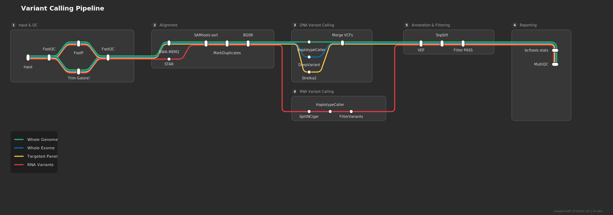
Fold Topologies¶
Fold Fan Across¶
Three lines diverge, converge at a fold, then continue on the return row.
CLI command:
Mermaid source
%%metro title: Proteomics Quantification Pipeline
%%metro style: dark
%%metro line: tmt | TMT Labeling | #e63946
%%metro line: lfq | Label-Free | #457b9d
%%metro line: dia | DIA | #2a9d8f
graph LR
subgraph sample_prep [Sample Preparation]
sp_input[Input]
sp_validate[Validate]
sp_extract[Extract]
sp_tag[Tag]
sp_filt_a[Filter A]
sp_filt_b[Filter B]
sp_merge[Merge]
sp_filter[QC Filter]
sp_qc[Final QC]
sp_input -->|tmt,lfq,dia| sp_validate
sp_validate -->|tmt,lfq,dia| sp_extract
sp_extract -->|tmt,lfq,dia| sp_tag
sp_tag -->|tmt,lfq,dia| sp_filt_a
sp_tag -->|tmt,lfq,dia| sp_filt_b
sp_filt_a -->|tmt,lfq,dia| sp_merge
sp_filt_b -->|tmt,lfq,dia| sp_merge
sp_merge -->|tmt,lfq,dia| sp_filter
sp_filter -->|tmt,lfq,dia| sp_qc
end
subgraph tmt_quant [TMT Quantification]
tmt_label[Label]
tmt_frac[Fractionate]
tmt_pool[Pool]
tmt_quant_ms[Quantify]
tmt_check[Check]
tmt_label -->|tmt| tmt_frac
tmt_frac -->|tmt| tmt_pool
tmt_pool -->|tmt| tmt_quant_ms
tmt_quant_ms -->|tmt| tmt_check
end
subgraph lfq_quant [Label-Free Quantification]
lfq_align[Align]
lfq_quant_ms[Quantify]
lfq_norm[Normalize]
lfq_align -->|lfq| lfq_quant_ms
lfq_quant_ms -->|lfq| lfq_norm
end
subgraph dia_quant [DIA Quantification]
dia_window[Window]
dia_extract[Extract]
dia_quant_ms[Quantify]
dia_window -->|dia| dia_extract
dia_extract -->|dia| dia_quant_ms
end
subgraph normalize [Normalization]
norm_input[Input]
norm_calc[Calculate]
norm_apply[Apply]
norm_input -->|tmt,lfq,dia| norm_calc
norm_calc -->|tmt,lfq,dia| norm_apply
end
subgraph stat_analysis [Statistical Analysis]
stat_merge[Merge]
diff_expr[Diff. Expression]
pathway[Pathway]
volcano[Volcano Plot]
stat_merge -->|tmt,lfq,dia| diff_expr
diff_expr -->|tmt,lfq,dia| pathway
pathway -->|tmt,lfq,dia| volcano
end
subgraph reporting [Reporting]
report_agg[Aggregate]
report_mqc[MultiQC]
report_final[Report]
report_agg -->|tmt,lfq,dia| report_mqc
report_mqc -->|tmt,lfq,dia| report_final
end
sp_qc -->|tmt| tmt_label
sp_qc -->|lfq| lfq_align
sp_qc -->|dia| dia_window
tmt_check -->|tmt| norm_input
lfq_norm -->|lfq| norm_input
dia_quant_ms -->|dia| norm_input
norm_apply -->|tmt,lfq,dia| stat_merge
volcano -->|tmt,lfq,dia| report_agg
Rendered output:
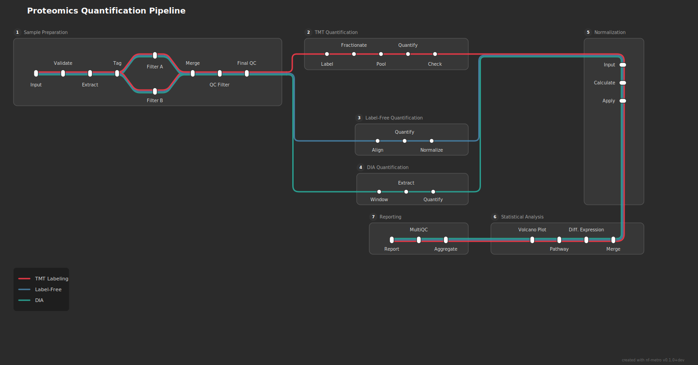
Fold Double¶
Ten-section linear pipeline with two fold points (serpentine layout).
CLI command:
Mermaid source
%%metro title: WGS/WES Variant Pipeline
%%metro style: dark
%%metro line: wgs | Whole Genome | #2db572
%%metro line: wes | Whole Exome | #0570b0
graph LR
subgraph input_qc [Input & QC]
iq_input[Input]
iq_fastqc[FastQC]
iq_trim[Trim]
iq_filter[Filter]
iq_input -->|wgs,wes| iq_fastqc
iq_fastqc -->|wgs,wes| iq_trim
iq_trim -->|wgs,wes| iq_filter
end
subgraph alignment [Alignment]
al_bwa[BWA-MEM2]
al_sort[Sort]
al_dedup[Dedup]
al_bqsr[BQSR]
al_bwa -->|wgs,wes| al_sort
al_sort -->|wgs,wes| al_dedup
al_dedup -->|wgs,wes| al_bqsr
end
subgraph base_recal [Base Recalibration]
br_recal[Recalibrate]
br_apply[Apply]
br_validate[Validate]
br_index[Index]
br_recal -->|wgs,wes| br_apply
br_apply -->|wgs,wes| br_validate
br_validate -->|wgs,wes| br_index
end
subgraph calling [Variant Calling]
vc_hc[HaplotypeCaller]
vc_genotype[Genotype]
vc_merge[Merge VCF]
vc_norm[Normalize]
vc_hc -->|wgs,wes| vc_genotype
vc_genotype -->|wgs,wes| vc_merge
vc_merge -->|wgs,wes| vc_norm
end
subgraph hard_filter [Hard Filtering]
hf_sel_snp[Select SNPs]
hf_sel_indel[Select Indels]
hf_filt_snp[Filter SNPs]
hf_filt_indel[Filter Indels]
hf_sel_snp -->|wgs,wes| hf_filt_snp
hf_filt_snp -->|wgs,wes| hf_sel_indel
hf_sel_indel -->|wgs,wes| hf_filt_indel
end
subgraph annotation [Annotation]
an_vep[VEP]
an_snpsift[SnpSift]
an_classify[Classify]
an_prioritize[Prioritize]
an_vep -->|wgs,wes| an_snpsift
an_snpsift -->|wgs,wes| an_classify
an_classify -->|wgs,wes| an_prioritize
end
subgraph interpretation [Interpretation]
ip_pathogenicity[Pathogenicity]
ip_frequency[Frequency]
ip_clinical[Clinical]
ip_aggregate[Aggregate]
ip_pathogenicity -->|wgs,wes| ip_frequency
ip_frequency -->|wgs,wes| ip_clinical
ip_clinical -->|wgs,wes| ip_aggregate
end
subgraph integration [Integration]
ig_merge[Merge Calls]
ig_validate[Validate]
ig_qc[QC Check]
ig_finalize[Finalize]
ig_merge -->|wgs,wes| ig_validate
ig_validate -->|wgs,wes| ig_qc
ig_qc -->|wgs,wes| ig_finalize
end
subgraph reporting [Reporting]
rp_summary[Summary]
rp_multiqc[MultiQC]
rp_report[Report]
rp_summary -->|wgs,wes| rp_multiqc
rp_multiqc -->|wgs,wes| rp_report
end
subgraph archival [Archival]
ar_archive[Archive]
ar_compress[Compress]
ar_archive -->|wgs,wes| ar_compress
end
iq_filter -->|wgs,wes| al_bwa
al_bqsr -->|wgs,wes| br_recal
br_index -->|wgs,wes| vc_hc
vc_norm -->|wgs,wes| hf_sel_snp
hf_filt_indel -->|wgs,wes| an_vep
an_prioritize -->|wgs,wes| ip_pathogenicity
ip_aggregate -->|wgs,wes| ig_merge
ig_finalize -->|wgs,wes| rp_summary
rp_report -->|wgs,wes| ar_archive
Rendered output:

Fold Stacked Branch¶
Stacked analysis sections feeding through a fold into branching targets.
CLI command:
Mermaid source
%%metro title: Single-Cell Multi-Omics Pipeline
%%metro style: dark
%%metro line: rna | scRNA-seq | #e63946
%%metro line: atac | scATAC-seq | #457b9d
%%metro line: protein | CITE-seq | #f5c542
graph LR
subgraph preprocessing [Preprocessing]
pp_input[Input]
pp_demux[Demux]
pp_qc_raw[Raw QC]
pp_trim[Trim]
pp_filter[Filter]
pp_qc_clean[Clean QC]
pp_classify[Classify]
pp_sort[Sort]
pp_input -->|rna,atac,protein| pp_demux
pp_demux -->|rna,atac,protein| pp_qc_raw
pp_qc_raw -->|rna,atac,protein| pp_trim
pp_trim -->|rna,atac,protein| pp_filter
pp_filter -->|rna,atac,protein| pp_qc_clean
pp_qc_clean -->|rna,atac,protein| pp_classify
pp_classify -->|rna,atac,protein| pp_sort
end
subgraph rna_analysis [RNA Analysis]
rna_norm[Normalize]
rna_cluster[Cluster]
rna_markers[Markers]
rna_trajectories[Trajectories]
rna_dge[DGE]
rna_norm -->|rna| rna_cluster
rna_cluster -->|rna| rna_markers
rna_markers -->|rna| rna_trajectories
rna_trajectories -->|rna| rna_dge
end
subgraph atac_analysis [ATAC Analysis]
atac_peaks[Peak Calling]
atac_motif[Motif Analysis]
atac_footprint[Footprinting]
atac_coverage[Coverage]
atac_peaks -->|atac| atac_motif
atac_motif -->|atac| atac_footprint
atac_footprint -->|atac| atac_coverage
end
subgraph protein_analysis [Protein Analysis]
prot_norm[Normalize]
prot_quant[Quantify]
prot_viz[Visualize]
prot_norm -->|protein| prot_quant
prot_quant -->|protein| prot_viz
end
subgraph integration [Multi-Modal Integration]
int_merge[Merge Modalities]
int_wnn[WNN]
int_umap[UMAP]
int_merge -->|rna,atac,protein| int_wnn
int_wnn -->|rna,atac,protein| int_umap
end
subgraph bio_interp [Biological Interpretation]
bio_celltype[Cell Typing]
bio_trajectory[Trajectory]
bio_grn[Gene Reg. Network]
bio_celltype -->|rna,atac| bio_trajectory
bio_trajectory -->|rna,atac| bio_grn
end
subgraph tech_qc [Technical QC]
tqc_doublet[Doublet Detection]
tqc_ambient[Ambient RNA]
tqc_metrics[QC Metrics]
tqc_doublet -->|protein| tqc_ambient
tqc_ambient -->|protein| tqc_metrics
end
subgraph final_report [Final Report]
fr_aggregate[Aggregate]
fr_report[Render Report]
fr_aggregate -->|rna,atac,protein| fr_report
end
pp_sort -->|rna| rna_norm
pp_sort -->|atac| atac_peaks
pp_sort -->|protein| prot_norm
rna_dge -->|rna| int_merge
atac_coverage -->|atac| int_merge
prot_viz -->|protein| int_merge
int_umap -->|rna,atac| bio_celltype
int_umap -->|protein| tqc_doublet
bio_grn -->|rna,atac| fr_aggregate
tqc_metrics -->|protein| fr_aggregate
Rendered output: